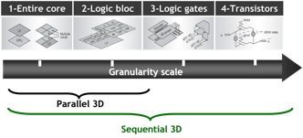

Tech Briefs
July 2015
IRT Nanoelec, Leti’s partners demo 3D stacking in scalable SoCs
by Debra Vogler, Senior Technical Editor
In advance of SEMICON West, IRT Nanoelec in conjunction with CEA-Leti and its partners, STMicroelectronics and Mentor Graphics, announced the realization of a 3D chip called “3DNoC” to demonstrate the use of 3D stacking technology in scalable, complex digital systems-on-chip.
According to the news release, the 3DNoC chip is based on a 2D die that can be used in a stand-alone applicative mode, and also in a 3D stack with several dice, to multiply the processing performance of the system. The project’s complete demonstration platform shows both the simulated and measured thermal effects in the 3D chip using a new Mentor Graphics® Calibre® thermal-analysis prototype.
“The technology developed for this realization can be easily used and transferred to address mixed-technology applications, such as imagers and RF transceivers, or complex digital processing, such as high-performance computing and programmable devices,” said Severine Cheramy, IRT 3D program director. “In parallel with these results, we are working on developments that address more fine-pitch 3D technology than those used in the 3DNoC demonstrator and solutions for thermal dissipation, temporary bonding, and stress issues.”
Figure 1: From 3D design to silicon demonstration. SOURCE: Leti

Figure 2: Granularity scale illustration showing the difference between parallel 3D and sequential 3D structures. SOURCE: Leti
Chip Scale Review asked Cheramy to comment on some of the developments alluded to in the above text quote: “This first work releases rough partitioning (core level),” Cheramy told CSR. “In order to get finer partitioning (logic block or gates), very low-pitch interconnections chip-to-chip (C2C) will be required.” Specifically, Cheramy noted that Leti is working on fine-pitch copper pillar (20µm) and Cu-Cu direct bonding (pitch <10µm). “Additionally, for high- performance applications, we are also working on a stress solution for a very large interposer, such as the kind used with high-aspect ratio TSVs and a stress buffer layer.”
Describing the differences between traditional 2D SoC and a 3D system, Cheramy told CSR that the network-on-chip (NoC) structure is already used for 2D SoC devices. “The principle is to decouple the information into packets in the x- and y-directions so this can be naturally extended to the third dimension by decoupling the information also in the z-direction (see Figure 1 for an illustration). Figure 2 illustrates the granularity scale difference between parallel 3D and sequential 3D structures.
 The new Tech News section will be featuring select quotes, commentary, and data based on questions posed to industry technologists by our senior technical editor, Debra Vogler. If your company has significant technical news to announce and you’re invited to participate in these interviews, be prepared to discuss the science behind your latest breakthrough, the R&D challenges that had to be solved along the way, and the industry challenges driving the need for the technology. Send your technology news releases to editor@chipscalereview.com
The new Tech News section will be featuring select quotes, commentary, and data based on questions posed to industry technologists by our senior technical editor, Debra Vogler. If your company has significant technical news to announce and you’re invited to participate in these interviews, be prepared to discuss the science behind your latest breakthrough, the R&D challenges that had to be solved along the way, and the industry challenges driving the need for the technology. Send your technology news releases to editor@chipscalereview.com